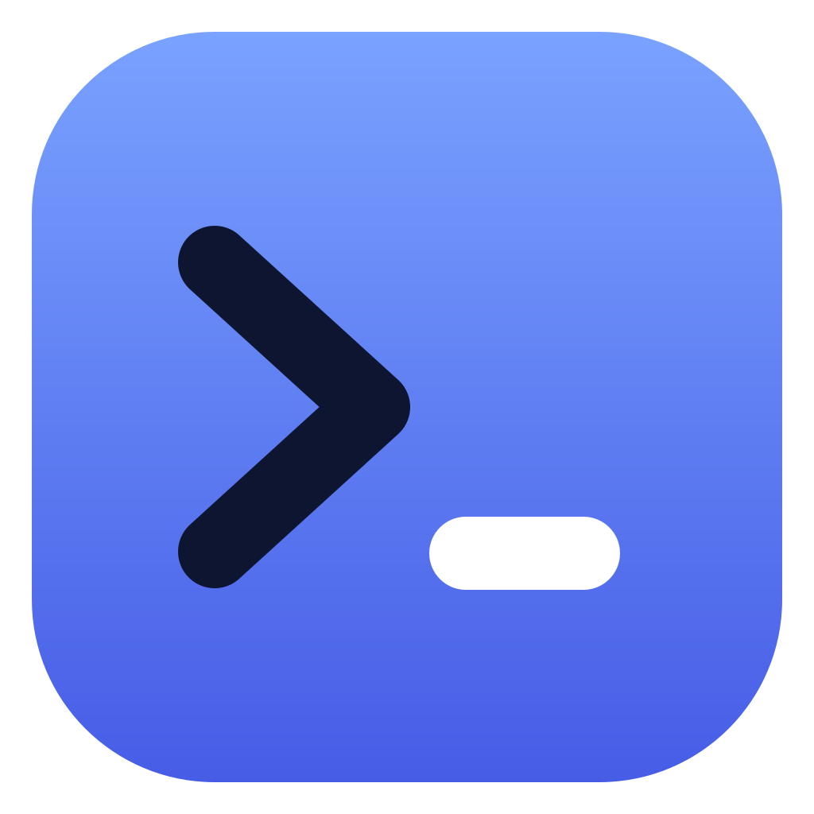

Sensei
2
Ask in plain words. Get the exact command.

Sensei
2.0
starting…
AI model
NPU power mode
powersaver
balanced
performance
turbo
Run read-only library commands automatically (AI-written ones always wait for you)
Let the AI pick tested tools first
Open terminal here
Clear